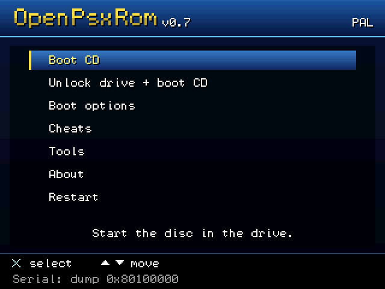
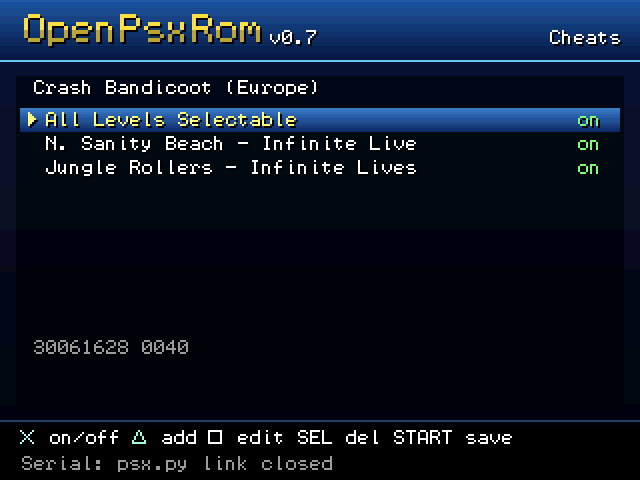
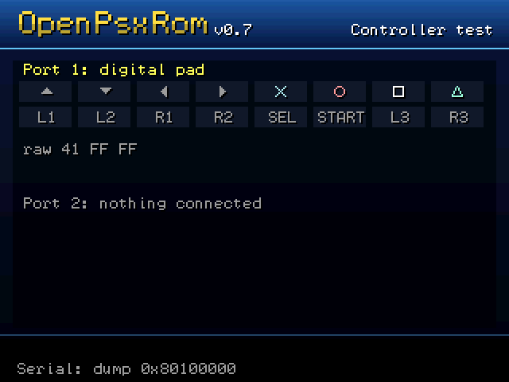

Using the menu


Controls: ▲▼ move, cross select or change, circle back. The bottom line shows the serial status (waiting for NOPS (115200), last command, transfer progress).
- Boot CD
Starts the disc: reads
SYSTEM.CNF, applies its kernel configuration (SetConf), installs the resident core if an option needs it, loads and starts the executable.- Unlock drive + boot CD
Unlocks the drive for burned discs (no modchip), then boots.
- Restart
Restarts the console, as the reset button.
Buttons are debounced (a release counts after 3 frames without the button), so a contact bounce or a failed pad read no longer gives a second press.
Boot options

Option |
Effect |
|---|---|
In-game menu (switch) |
Xplorer switch off then on, or L1+R1+L2+R2+START+SELECT held on pad 1, while a game runs opens the in-game menu. |
Serial debug in game |
|
printf -> serial |
Game and BIOS printf output goes to the serial port. |
Crash screen |
Registers on screen and on the serial port if the game crashes. |
Video mode |
as the game, force PAL (50 Hz) or force NTSC (60 Hz), for imports. |
Switch OFF at power-on |
bypass, ROM bank 2 or ROM bank 3; only banks holding a firmware are offered. Stored in the cartridge, used at power-on. |
The first five options apply when a CD is booted from the menu; the last one is saved in the flash when leaving the screen. The menu itself is displayed in PAL or NTSC from the BIOS region letter.
Cheats


GameShark codes (address + value), each one on/off, stored in the flash. The resident core applies the enabled codes on every interrupt while the game runs. Supported code types: 80 (16-bit write), 30 (8-bit write), 10/11/20/21 (increment/decrement), D0-D3/E0-E3 (conditions on the next code), 50 (serial repeater).
Codes from a cheat database
tools/cheats.py picks codes on the PC from a database in DuckStation’s format (its
resources/cheats.zip, a folder of SERIAL.cht files, or one .cht) and writes them to the
cartridge over the serial port; the Cheats list shows them at once:
python tools/cheats.py --db cheats.zip search "crash bandicoot"
python tools/cheats.py --db cheats.zip list SCES-00344 # numbered cheats
python tools/cheats.py --db cheats.zip send SCES-00344 1 3 4 # or: all; --append, --off
python tools/cheats.py show # what the cartridge holds
python tools/cheats.py clear
The cartridge keeps the game’s title and one list of up to 96 code lines, grouped by cheat with
its name (31 characters); the Cheats screen shows one line per cheat (cross turns all its code
lines on or off) and, at the bottom, the codes of the selected one. The core applies the enabled
codes whatever the game: send the codes of the game about to be played. A whole database does not fit in a cartridge
(DuckStation’s: about 4100 games, 1.7 MB in a compact form, 400-560 KB compressed), hence the
choice on the PC. Codes that need a value chosen (00??) or use a type the core does not handle
(C0/C2, 00…) are listed but not sent. PSX_CHEATDB can hold the database path.
Tools

- CD browser
Lists the disc; runs an
.EXE, flashes a.ROM(bank chosen as for/rom), plays an.STRvideo.- CD audio player
Plays audio tracks.
- VRAM viewer
Shows the whole video memory, scrollable.
- Memory cards
Two panes: the memory card (left) and the saves kept in the cartridge (right), with animated icons; copy, delete, free blocks. Writes are verified frame by frame.
- Controller test
Buttons and analog sticks of both pads (digital pad, DualShock, mouse…), and the raw bytes the pad answered.

- Hex editor
RAM and cartridge viewer.
- Cartridge info
Flash chip(s), IDs, protection, ROM CRC.
- Cartridge banks
What each bank holds (OpenPsxRom, Unirom, Caetla, Xplorer… or the header text, or empty), its CRC, which one the switch starts, and the switch-off setting.


Every entry of the main menu but Boot CD, Boot options, Tools and About, and every tool, can be left out of a custom build (Custom builds (menuconfig)).